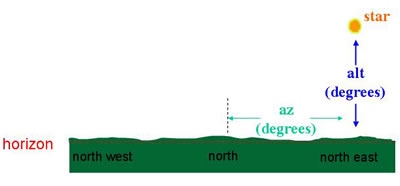

Alternatively known as ‘Alt/Az coordinates’, this system of celestial coordinates is dependent on the observer’s latitude and longitude. Using the observer’s local horizon as a reference plane, the position of an object on the celestial sphere at a particular time is given by its:
- Altitude- the angular distance above the horizon
- Azimuth- the angular distance measured east from north and parallel to the horizon

The horizonal coordinate system depends on the location of the observer and the time of the observation. It measures the altitude and azimuth of an object in degrees to position it on the sky.
The altitude (alt) of an object can lie between 0o (indicating it is on the horizon) and 90o at the zenith (or -90o if it lies below the horizon). The azimuth (az) changes from 0o for an object due North to 90o (due East) to 180o (due South) to 270o (due West).
The horizontal coordinate system is fixed to the Earth and not the stars and therefore, unlike in the equatorial coordinate system, the position of an object changes with time.